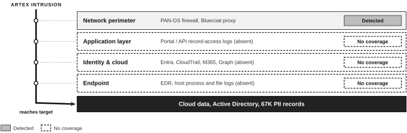
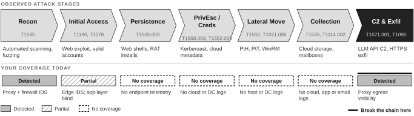
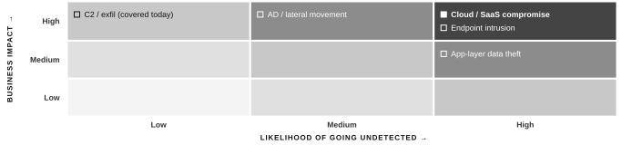

Your firewall and web proxy cover the two ends of the ARTEX kill chain; the middle and the cloud are unseen.
Bottom Line Up Front
Add endpoint and cloud telemetry before the next ARTEX-class intrusion.
Your telemetry comes from two products: a PAN-OS firewall and a Bluecoat proxy. They detect ARTEX reconnaissance and its outbound C2 and exfiltration, but see nothing on hosts, in Active Directory, or in the cloud. Of roughly 35 ATT&CK techniques attributed to ARTEX, about 26 fall in that blind zone.
| # | Action | Owner | By |
|---|---|---|---|
| 1 | Alert on egress to LLM API endpoints (api.anthropic[.]com, api.deepseek[.]com, open.bigmodel[.]cn, api.x[.]ai) and unfamiliar LLM proxies in proxy logs. | SOC | 7 days |
| 2 | Alert on sequential enumeration against login and search endpoints and on structured-data outbound transfers to unapproved destinations. | SOC | 14 days |
| 3 | Onboard EDR telemetry (process, file, module from hosts) into the lake to cover web shells, PowerShell and credential theft. | SOC Eng | 60 days |
| 4 | Ingest cloud and identity audit (Entra sign-in and audit, CloudTrail, M365, Graph) to cover the supply-chain and cloud kill chain. | IAM, Cloud | 90 days |
| 5 | Add application-layer logs with per-session record-access counts on partner and employee portals. | App Owners | 90 days |
The lake holds eight OCSF classes from two products. Network Activity dominates; the host, identity, cloud and application planes are absent. Figure 1 shows how an ARTEX intrusion crosses these planes.
| OCSF category | Class | Events | Source |
|---|---|---|---|
| Network Activity | HTTP Activity | 152,285 | Bluecoat Proxy |
| System Activity | Module Activity | 27,744 | PAN-OS |
| Findings | Detection Finding | 18,873 | PAN-OS |
| Identity & Access Mgmt | Entity Management | 8,388 | PAN-OS |
| Findings | Security Finding | 6,206 | PAN-OS |
| Network Activity | Network Activity | 6,205 | PAN-OS |
| System Activity | Device Config State Change | 3,164 | PAN-OS |
| Identity & Access Mgmt | Authentication | 3,064 | PAN-OS |
| Application Activity | No events collected | — | |
| Discovery | No events collected | — | |

ARTEX runs real offensive tools (nmap, nuclei, httpx, ffuf, sqlmap, dalfox, bbot) through LLM-driven worker agents, chaining stages at machine speed. Figure 2 places each stage against your current coverage.

| Tactic | Technique | Observed ARTEX behaviour | Coverage |
|---|---|---|---|
| Recon | T1595 | Active scanning, directory fuzzing across 500+ requests. | Covered |
| Initial Access | T1190, T1078 | Web exploits (SQLi, SSRF, XXE, SSTI), valid and stolen accounts. | Partial |
| Persistence | T1505.003 | JSP/PHP web shells; open-source RATs (WISP, vshell, AdaptixC2). | Gap |
| PrivEsc / Creds | T1558.003, T1552.005 | Kerberoasting, cloud metadata API, SAML token forgery. | Gap |
| Lateral Move | T1550, T1021.006 | Pass-the-Hash, Pass-the-Ticket, WinRM, SMB relay. | Gap |
| Collection | T1530, T1114.002 | Mass cloud-storage reads, remote mailbox collection. | Gap |
| C2 & Exfil | T1071.001, T1090 | LLM API C2, multi-hop proxy, HTTPS exfil to rotating webhooks. | Covered |
Analyst note
ARTEX TTPs are drawn from a simulated FBI FLASH advisory for this study; real behaviour varies with operator goals and the model driving the agents.[2] Partial verdicts depend on deployment: inline inbound inspection, TLS decryption at the proxy, and internal segmentation logging. Verify these before relying on edge visibility for inbound exploitation or lateral movement. OCSF volume is treated as a proxy for detection capability, so an empty category is the firm signal; a high count means collection exists, not that a tuned rule fires.
Figure 3 ranks the gaps by how likely an intrusion there goes undetected against its business impact. The top-right items earn the first investment.

Cloud and SaaS compromise sits top-right: it carries the supply-chain and mass-PII outcomes and leaves no trace in your current lake.
Endpoint intrusion is the same height: web shells, RATs and credential theft all run on hosts you do not log.
C2 and exfil sit low on likelihood because you already detect them. That is the chokepoint to exploit now, not the gap to fund.
Ordered by impact against the ARTEX kill chain, not by effort. Each plane converts a block of gap techniques to detectable.
| Priority | Telemetry plane | Converts these ARTEX techniques | Owner |
|---|---|---|---|
| 1 | Endpoint / EDR | Web shells, PowerShell, token theft, local staging, security-software discovery (~12 techniques). | SOC Eng |
| 2 | Cloud / SaaS audit | Cloud discovery, cloud account and role abuse, SAML forgery, cloud storage and secrets, supply chain. | Cloud, IAM |
| 3 | Application layer | IDOR and sequential record access behind the 67K-record theft; mass data reads. | App Owners |
| 4 | Domain controller / Windows | Kerberoasting, Pass-the-Hash, Pass-the-Ticket, domain discovery, GPP, SMB relay. | AD Team |
| 5 | Egress analytics (have it) | LLM API C2, sequential enumeration, bulk exfil. No new data source; tune rules now. | SOC |
Estimative language follows standard intelligence scales. Confidence reflects source quality and corroboration, not likelihood. Simulated, authorised hands-on study; no live system was tested.